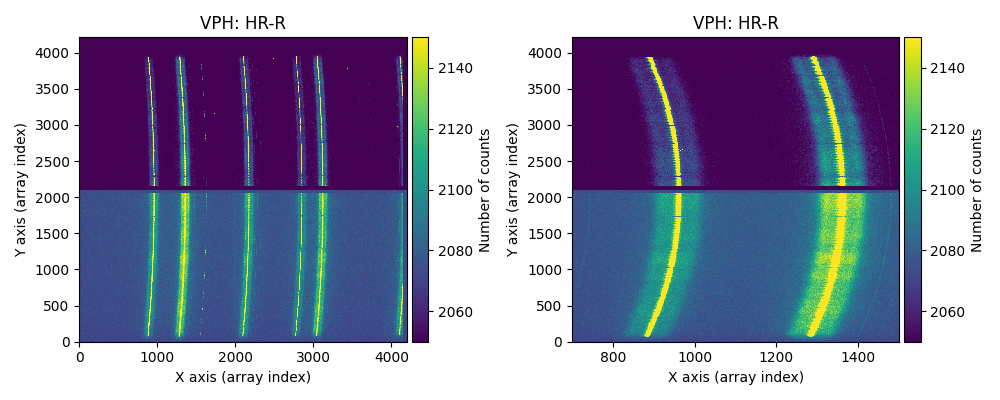
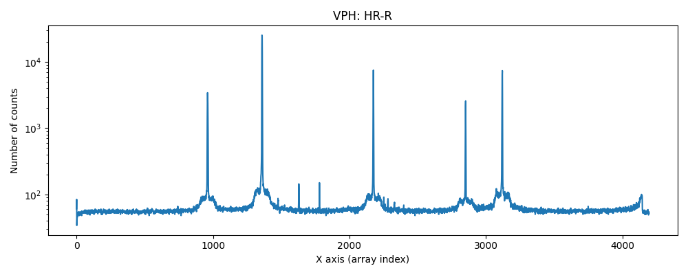
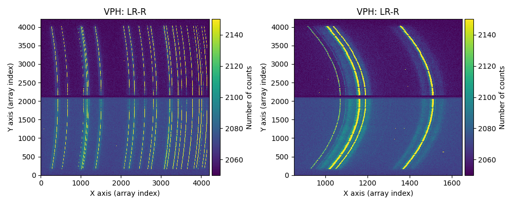
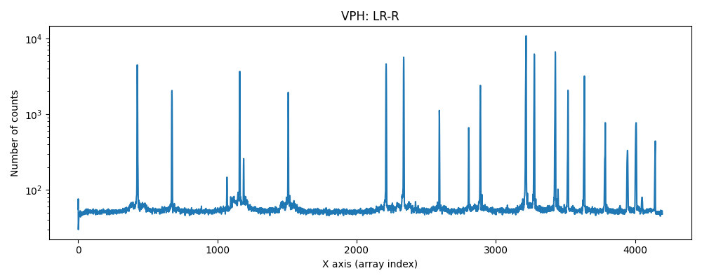

Problem with bright line tails
It has been detected that in some MEGARA observations where spectra with very bright emission lines are obtained, a spurious signal may appear near the tails of those lines. It is believed that the issue may be due to moisture condensation.
This is an example of a raw Th-Ne arc exposure, using the HR-R VPH:
 {kind=link}
{kind=link}
This is another example of a raw Th-Ne arc exposure, using the LR-R VPH:
 {kind=link}
{kind=link}
Note that in the spectral cut (in both examples), a logarithmic vertical scale is being used.
Although the effect has a very low signal compared to the center of the lines, it is important to examine the raw images of the arc exposures to check whether the effect is present. This effect can also be detected in exposures of scientific objects with intense emission lines.
MEGARA DRP does not include any functionality to address this issue. It is recommended to avoid those regions near the tails of very bright lines when extracting relevant scientific information.